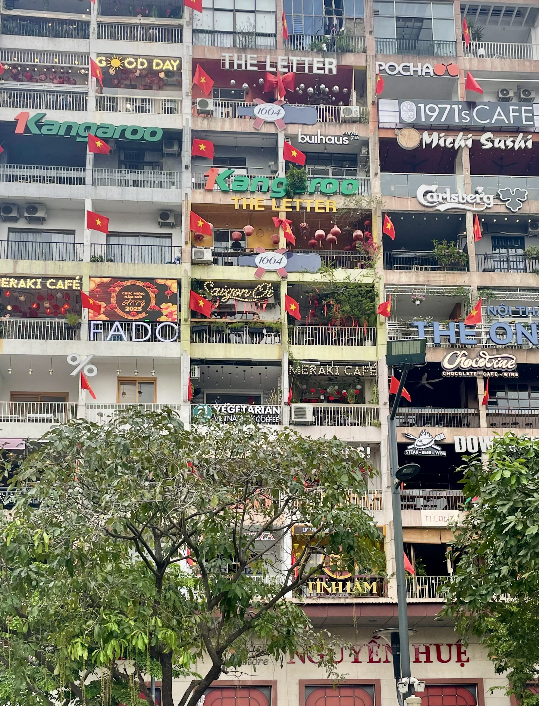
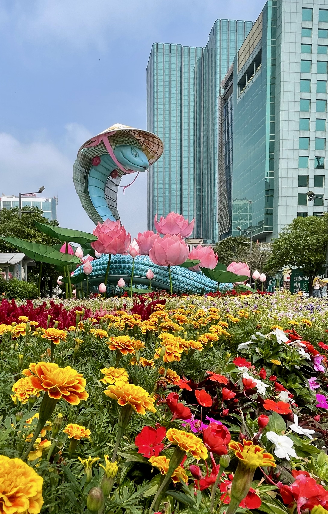
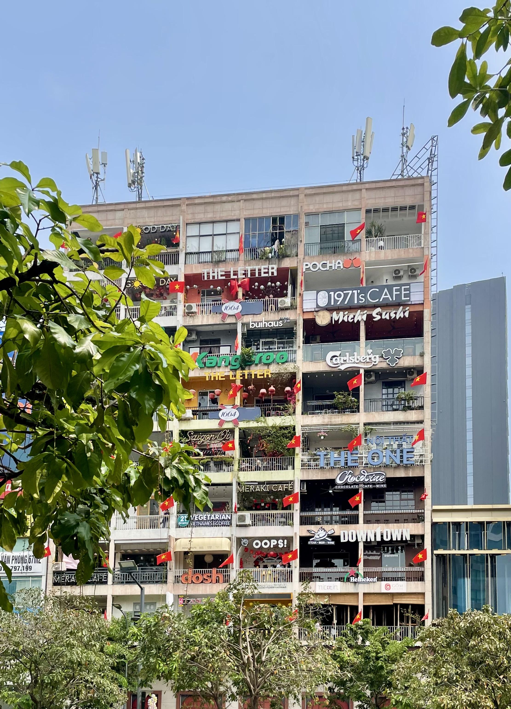
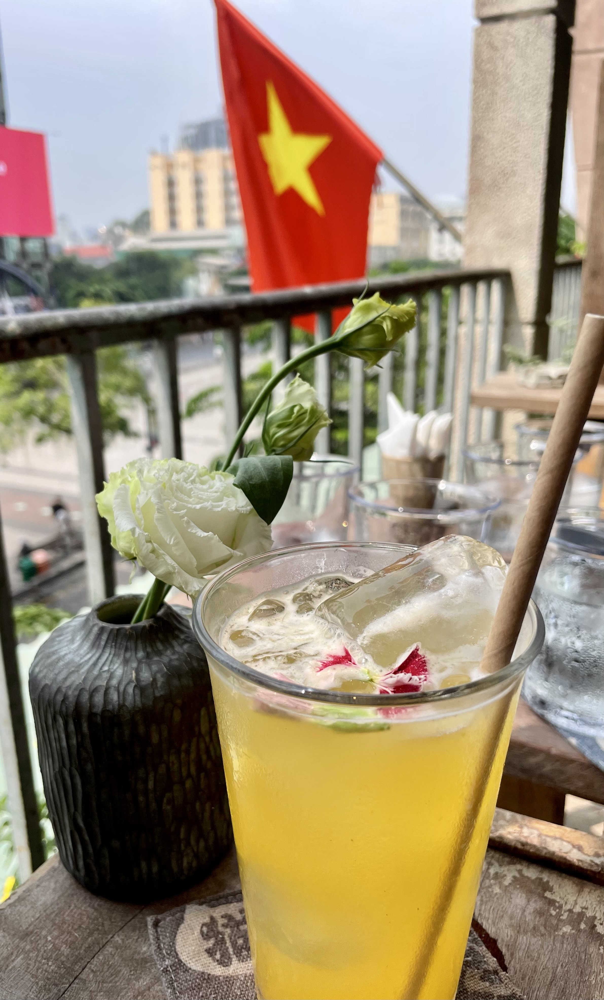
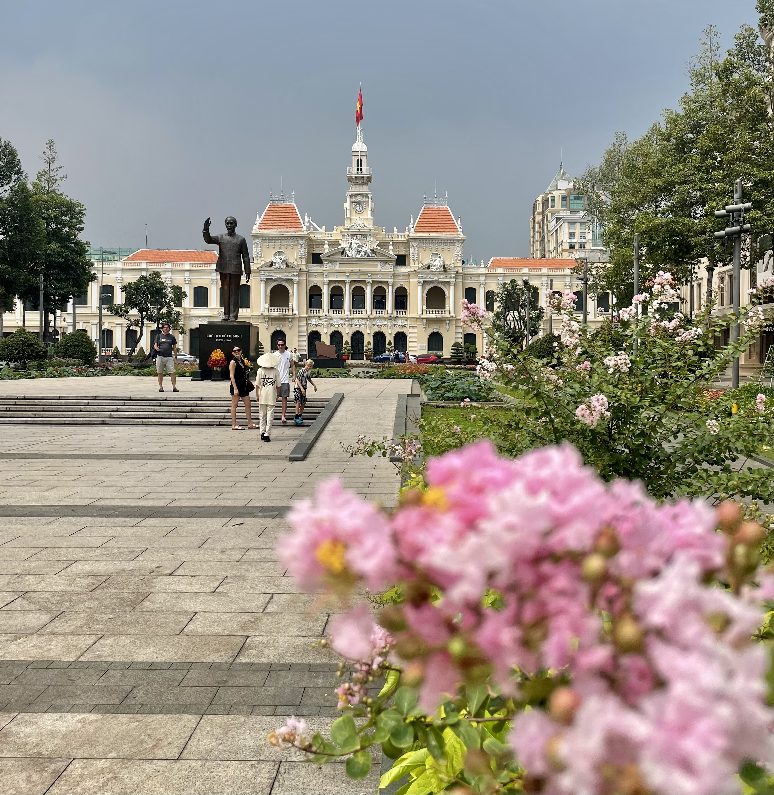
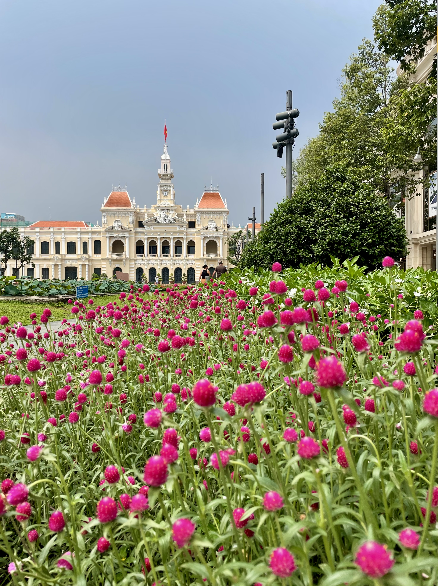
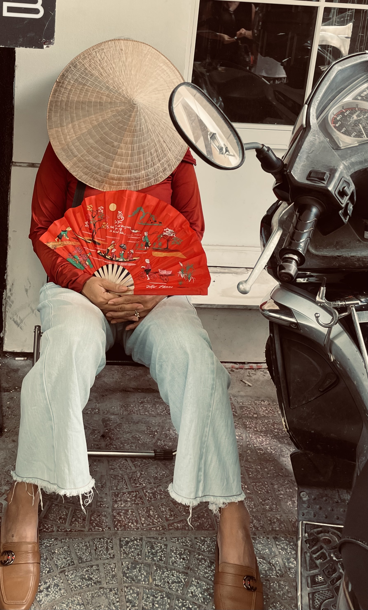
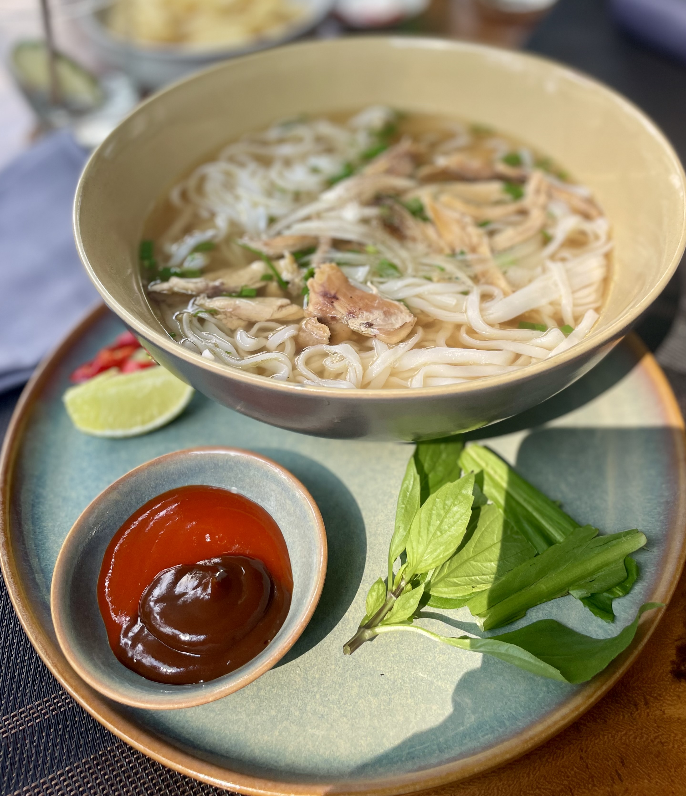

District 1
Our natural base for shopping, restaurants, cafés and the sheer energy of the city.
OUR HO CHI MINH CITY
We spent a weekend exploring Ho Chi Minh City on foot, moving through District 1, stopping whenever something caught our eye and gradually getting pulled into the extraordinary rhythm of Saigon. It is busy, noisy and occasionally chaotic — but somehow it all works.
The Central Post Office and Independence Palace gave us glimpses of the city's history, while shops, street food, cafés and Nguyen Hue kept drawing us back into the energy of modern Saigon.
FROM OUR CAMERA
THE CITY
We quickly realised that the best way to experience Ho Chi Minh City was simply to walk. District 1 gave us the perfect starting point — shops, cafés, restaurants, old buildings and an almost constant stream of life.



THE OLD SAIGON
The Saigon Central Post Office was one of those places that stopped us in our tracks. Its grand architecture feels completely different from the streets outside, yet somehow belongs to the same city.

Independence Palace offered another glimpse into the city's past. Walking between these landmarks gave the weekend a useful sense of perspective — modern Saigon moving at full speed around pieces of its history.
DISTRICT 1
District 1 became our natural playground. We wandered between shops, cafés and restaurants, stopping for food whenever we fancied it and letting the streets dictate the route.




AFTER DARK
As evening arrived, Nguyen Hue Walking Street became one of our favourite places to be. The crowds gathered, the lights came on and the energy seemed to rise another level.
And everywhere around it was the traffic — an extraordinary river of motorbikes flowing through the city. At first it looked completely chaotic. After a while, you started to realise there was an almost perfect choreography to it.
BEST FOR
Walk, eat, shop and explore without needing a packed itinerary.
THE FEELING
Busy streets, incredible traffic and an energy that continues well into the evening.
OUR BASE
A brilliant starting point for shopping, food, landmarks and exploring the city on foot.
OUR PICKS
Our natural base for shopping, restaurants, cafés and the sheer energy of the city.
A beautiful historic landmark and an impressive reminder of the city's architectural past.
A fascinating window into Vietnam's modern history and an essential stop in the centre.
Go after dark, when the crowds gather and the city feels at its most alive.
One of the pleasures of walking Saigon is being able to stop whenever something smells too good to ignore.
Our favourite way to experience the contrasts between architecture, shops, food and street life.
FROM THE JOURNAL
There are cities where you need a plan. Ho Chi Minh City wasn't one of them. We spent the weekend walking, following whatever looked interesting and letting the city gradually reveal itself.
District 1 became our starting point, with its shops, restaurants and cafés. The Central Post Office and Independence Palace added a completely different layer, reminders that beneath the modern energy is a city with an extraordinary history.
Street food became part of the rhythm. So did shopping, stopping to watch the traffic and simply taking in the incredible amount of life happening around us.
By evening, Nguyen Hue was buzzing. The crowds had gathered and the city seemed to turn the volume up. Motorbikes streamed through the streets in seemingly impossible numbers, somehow avoiding one another with remarkable precision.
That was our Ho Chi Minh City: walk, eat, look around, stop, start again. A short weekend that somehow felt completely full.
MORE FROM OUR CAMERA
ON THE MAP
Vietnam's endlessly energetic southern city, where historic landmarks, buzzing districts, incredible street food and a seemingly endless stream of motorbikes come together.
OUR HO CHI MINH CITY
We spent a weekend exploring Ho Chi Minh City on foot, moving between its different districts and getting a feel for the energy that makes Saigon so addictive. From the grand old Central Post Office and Independence Palace to the buzzing streets of District 1, every corner seemed to offer something different.
Evenings belonged to Nguyen Hue Walking Street, while street food, shopping and the extraordinary choreography of the city's endless stream of motorbikes kept us moving.
THE PHOTO STORY
BEST FOR
Walk, eat, shop and explore without needing a packed itinerary.
THE FEELING
Busy streets, incredible traffic and an energy that continues well into the evening.
OUR BASE
A great starting point for shopping, food, landmarks and exploring the city on foot.
OUR PICKS
01
The place we kept coming back to for shopping, restaurants, cafés and the sheer energy of the city.
02
One of the city's great architectural landmarks and an easy stop while exploring the centre.
03
A fascinating glimpse into Vietnam's modern history and one of the city's most recognisable landmarks.
04
Best enjoyed after dark, when the crowds gather and the city really comes alive.
05
Superb, varied and seemingly everywhere. Some of our favourite moments came from simply stopping to eat.
06
The best way we found to experience the contrast between districts, architecture, shops, food and street life.
FROM THE JOURNAL
There are cities where you need a plan. Ho Chi Minh City wasn't one of them. We spent the weekend walking, following whatever looked interesting and letting the city gradually reveal itself.
District 1 became our starting point, with its shops, restaurants and cafés. The Central Post Office and Independence Palace added a completely different layer, reminders that beneath the modern energy is a city with an extraordinary history.
Street food became part of the rhythm. So did shopping, stopping to watch the traffic and simply taking in the incredible amount of life happening around us.
By evening, Nguyen Hue was buzzing. The crowds had gathered and the city seemed to turn the volume up. Motorbikes streamed through the streets in seemingly impossible numbers, somehow avoiding one another with remarkable precision.
MORE FROM THE CITY
ON THE MAP
Vietnam's endlessly energetic southern city, where historic landmarks, buzzing districts, incredible street food and a seemingly endless stream of motorbikes come together.